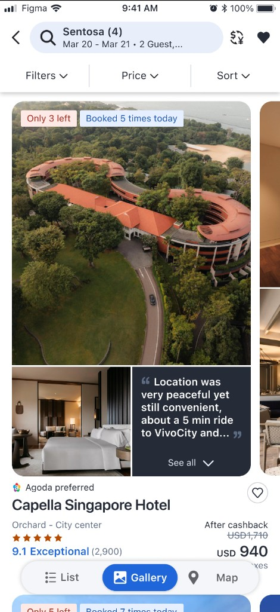
Agoda
Pathfinder
A new, image-heavy way to browse properties.
I joined Pathfinder TF to shape a new hotel booking experience. We aimed to stand out from other platforms with image-first browsing, so customers could quickly grasp each hotel’s vibe and essential details.
- Shipped
- Accommodation
- Under experiment
- Q1 & Q2 26’
Product platform
Agoda app
My role
I owned this feature end-to-end. I started by pairing data insights with overlooked UX gaps. From the second experiment through two quarters of iteration, I ran unmoderated UT, moderated UT, and AI UT with Listenlab to keep evolving Gallery view.
- Product design
- Problem solve
- Interactive prototyping with Vibe Code
- 3 Userbility Tests
- Stakeholder management
Background
I joined Pathfinder TF to shape a new hotel booking experience. We aimed to stand out from other platforms with image-first browsing, like TikTok and other MZ apps, so customers could quickly grasp each hotel’s vibe and essential details.
Why it matters
Agoda’s search UX has not kept pace with travelers’ visual-rich browsing habits. They must still bounce between search results and property pages to shortlist the right stays.
Hypothesis
A more visual, content-rich search experience will help users understand, compare, and confidently shortlist the right hotel directly from SSR.
The first experiment failed significantly; I joined at that turning point. We then kept adding useful features to help users browse more effectively in this view.
Problems to solve
Data from the first experiment surfaced major problems in the first design. I reviewed the live app and ran a UX analysis to identify what was going wrong. That work defined what I needed to fix.
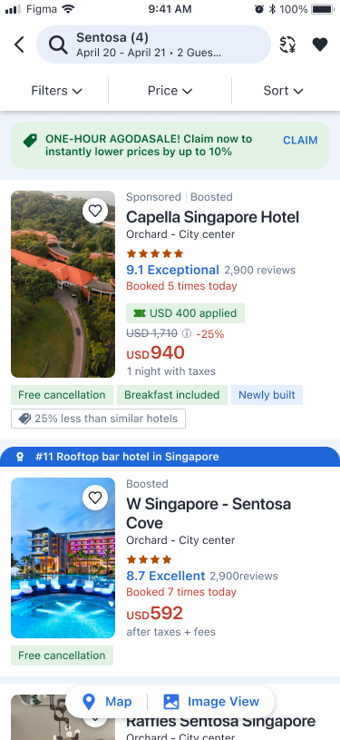
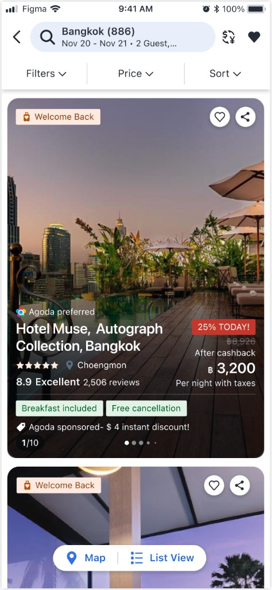
Conclusions + Key data
Some users seem to like this mode (among 0.8% of users that tried Image View, ~50% stayed after trying), with a change in browsing behaviour (property card click-to-seen rate ~2x). Conversion rate lower than those who toggled back, but not an immediate concern given possible self-selection.
Likely some cases of confusion, leading to drop-off (among users that tried Image View, 12% of them seen only 1 card, and didn’t toggle back). Those that toggled back are fine and had similar conversion rate as before.
Worth iterating v2, no indication that this is a disaster.
Changes informed by findings above:
- Change #1: A more prominent entry point, aim for 10% users to try
- Change #2: A clearer visual feedback when entering the mode, so user can toggle back easily
Summary of flaws
-
Drop-off due to unclear image view mode toggle switch (12%)
Within a specific segment (0.8%), 12% viewed only one property card and never toggled back to the previous view. This signalled confusion or unclear navigation.
-
Unmatched user expectations and unclear value for the image view
About half of users stayed in Gallery view (suggesting potential value), but browsing patterns differed and conversion was lower than for users who toggled back to the standard list. The mode works for some, but is not well optimised for final decisions; frequent toggling back suggests the image view does not meet needs or expectations.
-
High information discovery friction
Low conversion tied to comparing details that are easier to scan in list view.
- Loss of information from enlarged images: Hotel room photos often carry key info in the bottom half; scaling to fit the ratio breaks the layout, so the first image after landing fails to make a strong appeal.
- Readability and visibility: Accessibility-driven unified text colours on images block visual content and reduce readability, making details hard to grasp at a glance.
Images and text were not delivered effectively, pushing customers back to list view.
Hypothesis
Separate text from images so users are less distracted. Photos at the right ratio reveal more about each accommodation. A clear view mode switch helps users opt in and out easily instead of dropping off.
Ideation for 1st iteration
I benchmarked again across OTA apps like Airbnb, Booking.com, Trip.com, NOL, Good Choice, Hotels.com, Tripadvisor, Klook, Expedia, MakeMyTrip, Goibibo, and others, studying how far they stretch images. Separating informational text from images rather than overlaying it was the clearest approach.
The biggest UX gap was that customers could not reliably return to list view. I persuaded stakeholders to introduce a new segmented control in the Agoda Design System, because no suitable component existed at that time. I partnered with our Design System designer to ship primary and secondary variants quickly, adding a component other teams could reuse. I owned the prototype animation and coordinated the work across the team.
Exploration
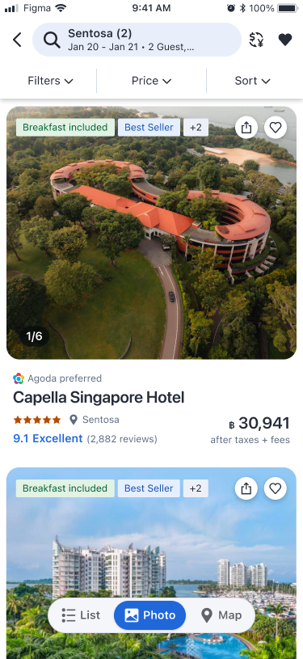
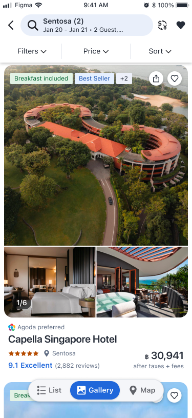
Like Photo carousel view, I separated images from hotel information and built a variation that showed a single image in a carousel. While exploring how to use the image area more effectively, I developed the Multiple photo carousel layout.
1st UT insights
I designed questions on UserTesting.com and ran 1st UT with both versions to gather feedback. Multiple photo layout gained stronger support, giving me a clear basis to pursue this direction in the 2nd iteration. I decided to test Photo carousel view first, to validate detaching content from images and the new view switch control UI below.
PHOTO vs LIST
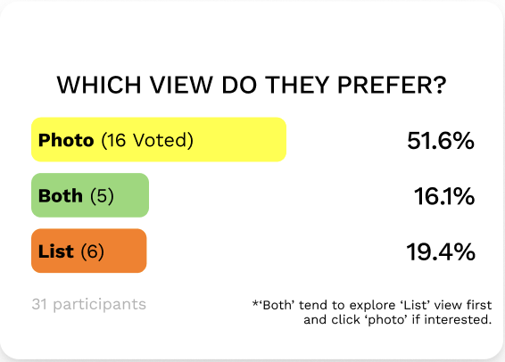
51.6% of participants found Photo view helpful. They are visual learners and want to see what the hotel looks like for a quick overview. It provides larger, clearer images; they value the environment, location context, and hotel interiors.
16.1% found both views (hybrid) helpful. They use both at different stages of their search process: list view initially to compare options, then photo view for details on hotels they are interested in.
19.4% found List view helpful. It provides more hotels and detailed information at once. Users value information like price and amenities over photos when browsing hotels.
VISIBILITY & USABILITY
Q.How easy was it to find the [List / Photo / Map] view button?
Q.How easy was it to switch between [List / Photo / Map] views?
Both got the same score - 4/5
PHOTO vs GALLERY
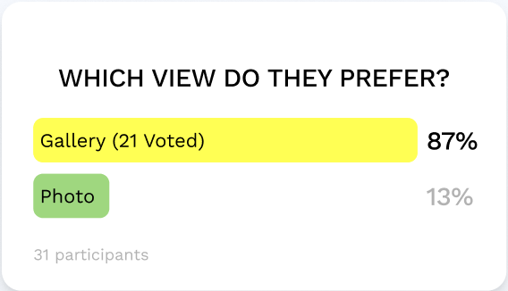
The gallery view is a clear winner. Most participants preferred Gallery because it shows more photos and information at a glance: rooms, interiors, and property context without opening each listing. They called it more efficient, like a glossy magazine layout that saves time compared to a single hero image.
A small minority preferred Photo for a simpler, less cluttered list. Suggestions included stronger scroll affordances (arrows or hints), clearer naming for Photo vs Gallery, and minor layout tweaks such as a slightly larger view.
Proposed solution
In the current app, the map opens as a completely separate page, so full segmented control integration will come in a later phase. For the first experiment, I shipped a semi-complete segmented control component, as shown in the image. I made a small UI adjustment as part of deprecation work in the design system before proceeding this way.
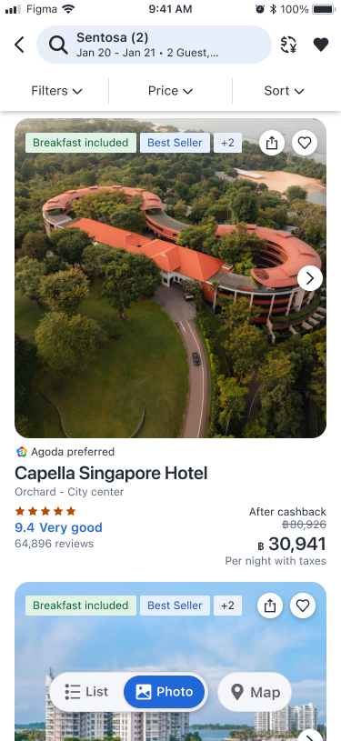
Experiment result
Decision-making metrics from the experiment:
- Impact segment — Improvement: Accom. IBPD (Bookers) 729
- Overall — Flat: Accom. IBPD 676; Accom. Booking B/A% 0.64%
- Recommendation: Taken B (Flat - B)
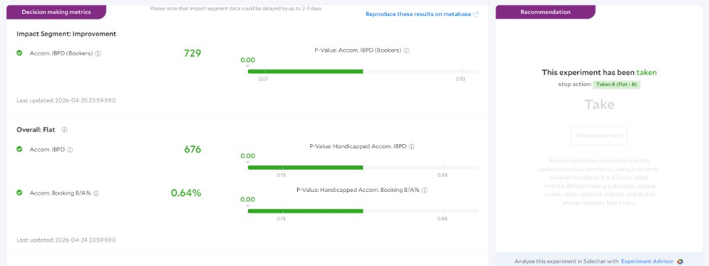
Ideation for 2nd iteration
After testing Gallery view, I focused on what useful features could differentiate it further from List view, which users are already used to. Larger images alone were not a strong enough differentiator.
The first was social proof. I added review snippets so customers could connect with ratings more directly, shorten browsing time, and find suitable accommodation faster. I also added inline map preview so users could check a hotel’s location without leaving the view.
We briefly called these 2 clickables. After that, I explored adding one more, which is room selection to let users quickly view available rooms.
Exploration
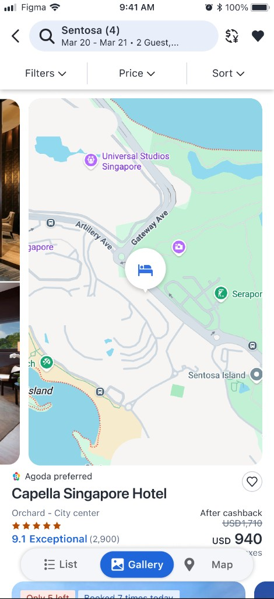
- Review snippets: Showing snippets made it easier for customers to grasp what matters before reading every review on the property page. When they wanted to learn more, they could read other reviews without leaving the view, which improved accessibility.
- Map preview: This helped customers understand a hotel’s location without opening Google Maps or another app. It addressed a common pattern where users kept a map open in a separate window while browsing.
- Room preview: Customers often could not tell which room the displayed price referred to. Room preview helped them connect price to room type faster and resolved a key pain point in this view.
2nd UT
I ran moderated UT interviews with internal Agodans on map preview, review snippets, and room preview in Gallery view. The sessions helped me prioritise more clearly and surface ideas for the next iteration.
Review snippets
Participants wanted a quick glance at what matters before reading every review on the property page.
Strong contrast and clear tap affordance made snippets feel genuine and worth opening.
Some noted accidental taps when the snippet did not look clickable enough.
Map preview
Users liked checking location without opening Google Maps or another app.
Several wanted a wider map with more landmarks and surrounding context, not only a tight property shot.
Opinions split on placement: helpful in the gallery for some, disruptive mid-scroll for others.
Room preview (See rooms)
Participants wanted to know which room each photo and price referred to, especially for budget fit.
Seeing room options and prices without opening the full property page was highly valued.
Some expected room photos; a clearer, larger room list still helped functional decisions.
Side notes
AI summaries were mixed: useful for specific questions, but real reviews felt more genuine to others.
Some booking metrics felt confusing or inauthentic and needed clearer presentation.
Experiment results
- Impact segment — Improvement: Accom. IBPD (Bookers) 39
- Overall — Flat: Accom. IBPD 5.21; Accom. Booking B/A% 0.00%
- Recommendation: Taken B (Flat - B)
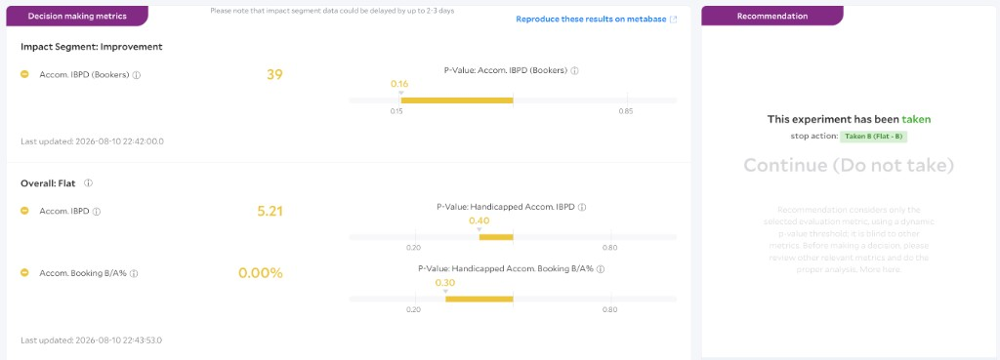
- Impact segment — Improvement: Accom. IBPD (Bookers) 89
- Overall — Flat: Accom. IBPD 49; Accom. Booking B/A% 0.03%
- Recommendation: Taken B (Flat - B)
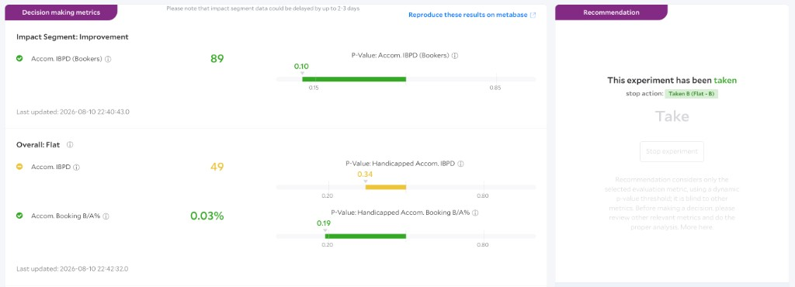
- Overall — Improvement: Accom. IBPD (Bookers) 279
- Recommendation: Taken B (Flat - B)
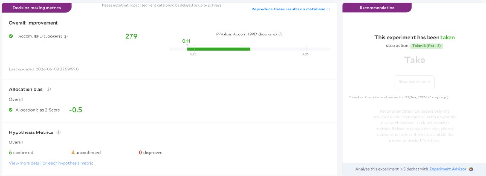
- Impact segment — Improvement: Accom. IBPD (Bookers) 110
- Overall — Flat: Accom. IBPD 137; Accom. Booking B/A% 0.08%
- Recommendation: Taken B (Flat - B)
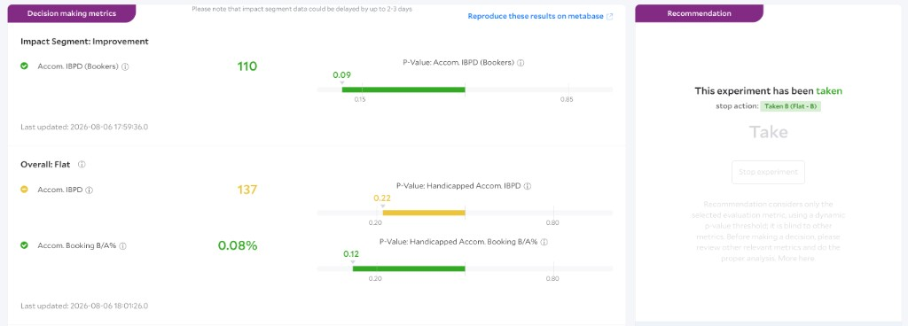
3rd UT with Listen Lab
Alongside the design changes above, I ran an AI interview with Listen Lab on a prototype to gather feedback on the new view. I also ran an intercept survey in the Agoda app at the same time.
Listen Lab
Gallery view excels at building trust and emotional connection, but it falls short on the comparison and price-scanning behaviors that drive bookings. Users like browsing hotels in Gallery, but they book from List.
- Single-hotel-per-scroll is the #1 barrier: 10 of 11 participants said the inability to compare multiple hotels at once was Gallery’s biggest gap.
- Price comparison collapses in Gallery: 9 of 11 found List easier for comparing prices, because seeing two hotels at once enables instant tradeoff evaluation.
- Booking-critical details go missing: Gallery strips away cancellation policies, breakfast, and discounts that act as decision triggers in List view.
Intercept survey
The intercept results echoed the same pattern: users found the conservative SSR easier than Pathfinder, which helped explain why Gallery felt compelling to explore but harder to book from.
Ideation for 3rd iteration
To solve the problems above, I reworked the design on several fronts: right-sizing image height, optimizing info card layout, and finding ways to surface more on scroll without adding clutter. I trimmed images and stripped content to essentials, but one block still could not hold everything.
Beyond adding features, I moved pricing onto the image with a price card at the bottom-right and scroll-time transparency so the photo stays unobstructed. I also hid the top filters and bottom segmented control on scroll to keep the viewport focused on properties while users browse.
Exploration
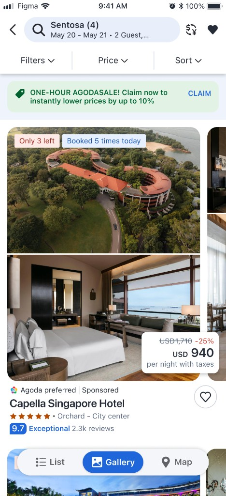
To improve scanability of hotel information below the image, I explored several layout directions before landing on this design. On scroll, the price card fades to transparent so the photo stays visible; when scrolling stops, it returns to opaque. I prototyped this interaction quickly in Cursor and handed it off to engineering.
When users scroll up to the next property, the segmented control hides to free up space. This addressed a landing issue where users could only see one property at a time. I also vibe-coded this behavior and shared it with engineers for a faster handoff.
Experiment results
Onboarding for the first timer
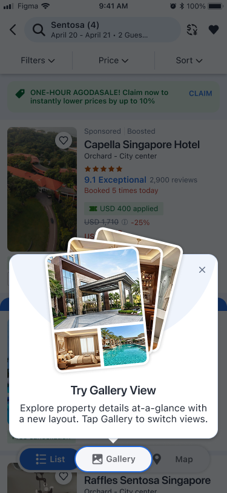
Onboarding was a feature I pushed to ship first. Through alignment with stakeholders, it landed a little later than I had hoped, but a proper introduction still made a real difference. When we add something new, a friendly and concise explanation helps people understand it faster, and that understanding showed up in the results.
The Try Gallery View modal points users to Gallery in the segmented control and gives them a clear first look at the view. I was proud to see strong engagement from a feature I had advocated for from the start.
Experiment result
Decision-making metrics from the experiment:
- Impact segment — Improvement: Accom. IBPD (Bookers) 174
- Overall — Flat: Accom. IBPD 128; Accom. Booking B/A% 0.08%
- Recommendation: Taken B (Flat - B)
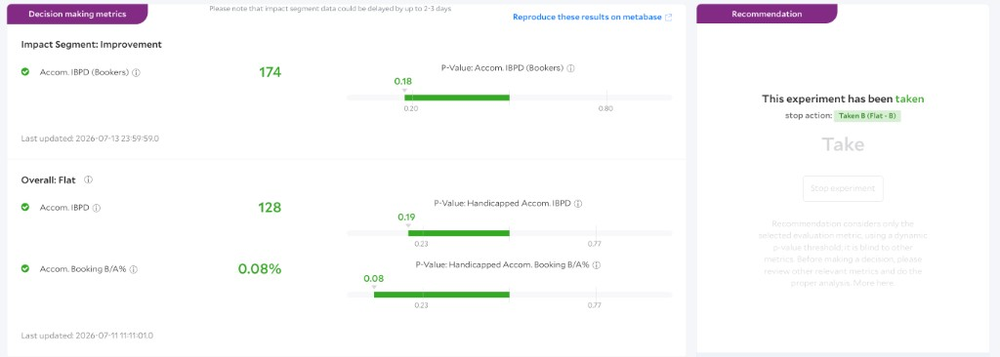
New tag & New layout for Segmented control
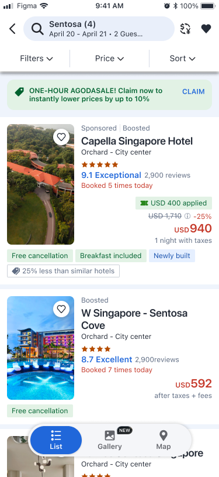
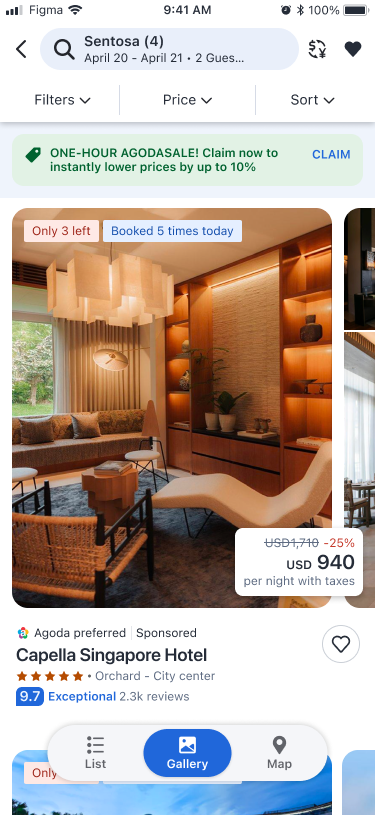
To bring more users into Gallery, we added elements designed to catch attention. The design system did not yet include every component we needed, so I created assets with AI illustration. One example is the NEW tag, which signals that the view is new and nudges people to try it.
I also contributed a new segmented control layout, realigned with the ADS team to land this version in the product.
Experiment results & Impact
Decision-making metrics from the experiment:
- Impact segment — Improvement: Accom. IBPD 396
- Overall — Flat: Accom. IBPD 424; Accom. Booking B/A% 0.60%
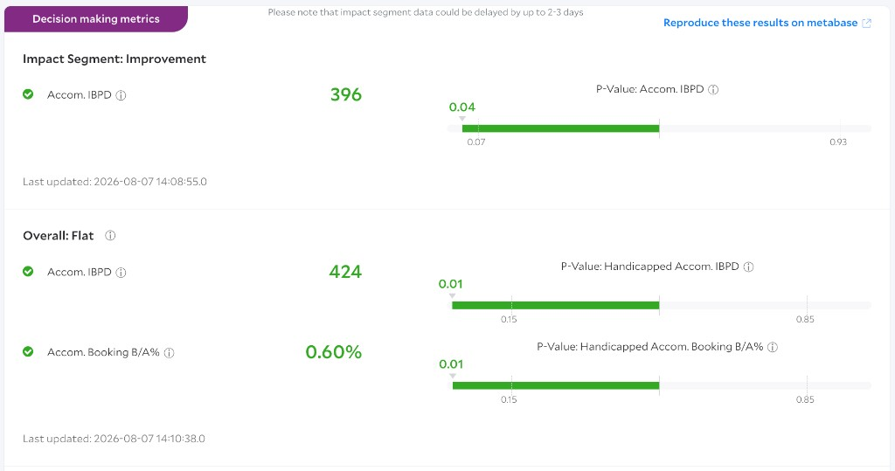
What I learned
This project ran for about six months, a relatively long initiative in our roadmap. We had experiments that did not land, but the timeline gave us room to try many directions and explore ideas quickly. I am grateful that repeated UT and carefully made decisions did not kill momentum. They helped us keep moving forward without losing sight of what might become a win.
I also pushed harder on UX refinement and learned more by testing how far we could improve the experience without overloading the view. It was a project that helped me grow as a designer.
Going forward, I want to keep contributing to this mode so users can browse more comfortably and get more value from Gallery over time.
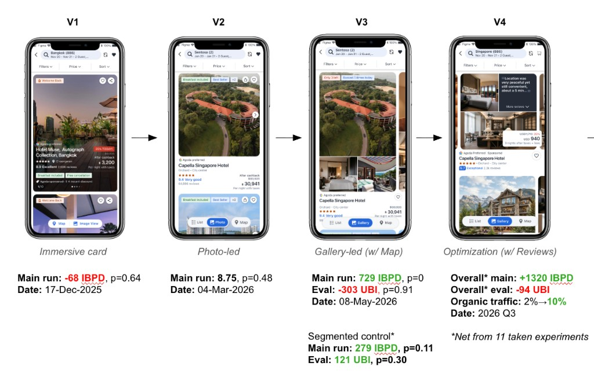
Team
This project was made possible with the combined effort from:
- PM:
- POC Designer:
- Supporting designer: , who helped me contribute the new component
- Content:
- Researcher:
- Engineers:
- Leadership:
Thanks to the heroes behind this!